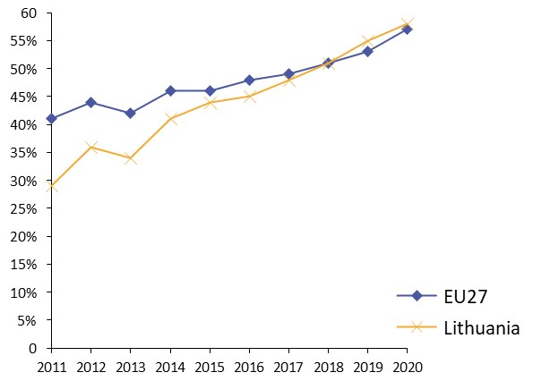
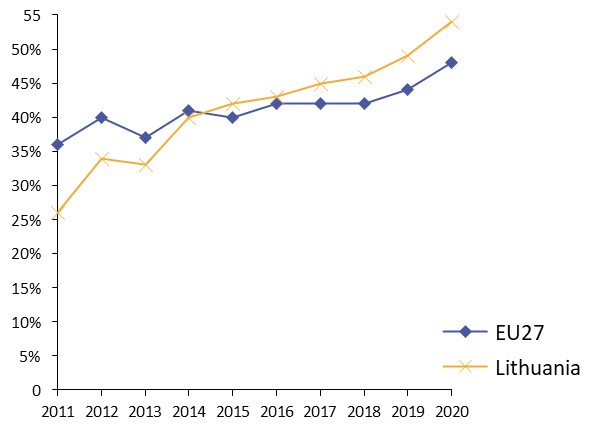
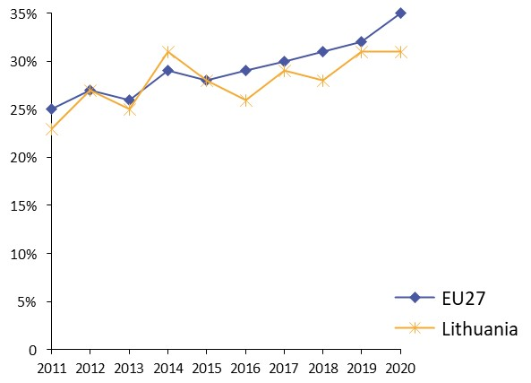
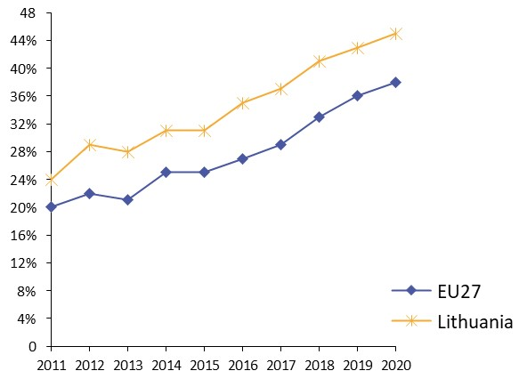
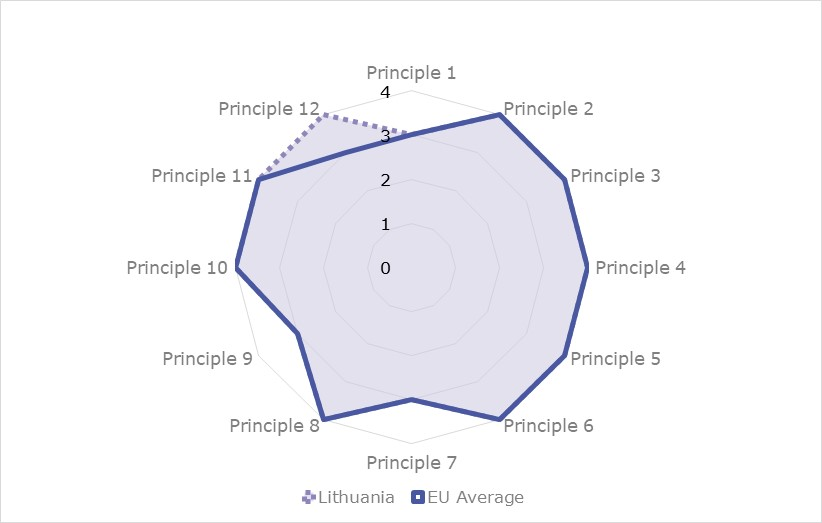
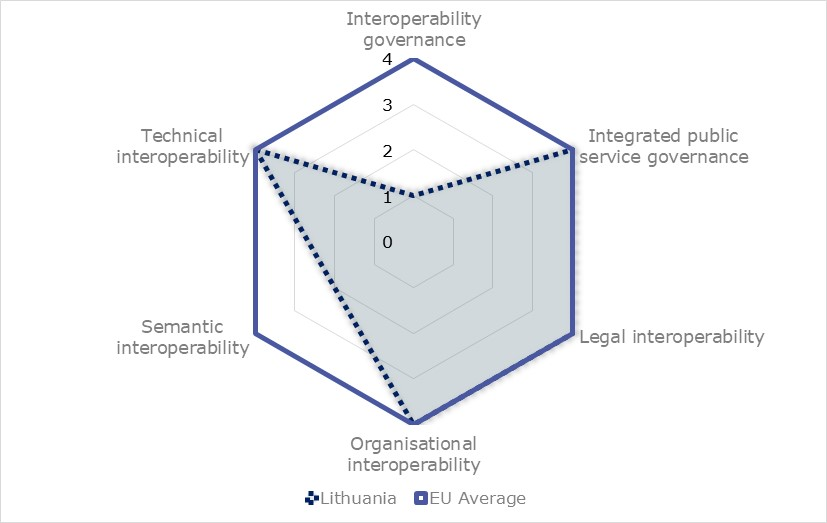
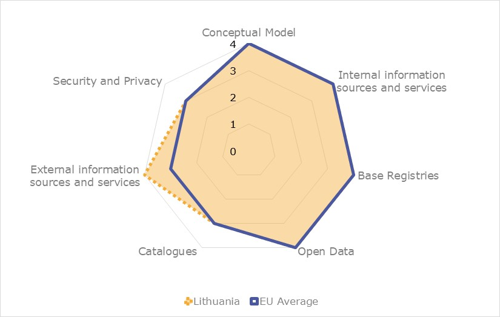
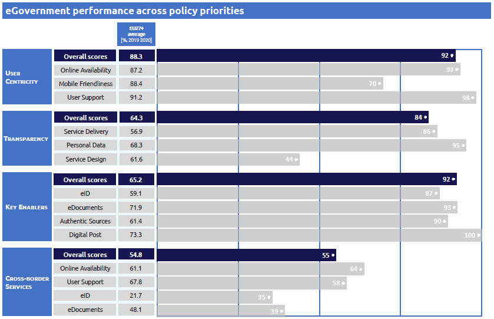

ISA2
Digital Public Administration factsheet 2021
Lithuania
2 Digital Public Administration Highlights 10
3 Digital Public Administration Political Communications 12
4 Digital Public Administration Legislation 18
5 Digital Public Administration Governance 27
6 Digital Public Administration Infrastructure 33
7 Cross-border Digital Public Administration Services for Citizens and Businesses 41
Please note that the data collection exercise for the update of the 2021 edition of the Digital Public Administration factsheets took place between March and June 2021. Therefore, the information contained in this document reflects this specific timeframe.

Country
Profile
1
Population: 2 794 137 inhabitants (2020)
GDP at market prices: 48 929.7 million Euros (2020)
GDP per inhabitant in PPS (Purchasing Power Standard EU 27=100): 87 (2020)
GDP growth rate: -0.90% (2020)
Inflation rate: 1.1% (2020)
Unemployment rate: 8.5% (2020)
General government gross debt (Percentage of GDP): 47.3% (2020)
General government deficit/surplus (Percentage of GDP): -7.4% (2020)
Area: 65 300 km2
Capital city: Vilnius
Official EU language: Lithuanian
Currency: Euro
Source: Eurostat (last update: 23 July 2021)
The following graphs present data for the latest Digital Public Administration Indicators for Lithuania compared to the EU average. Statistical indicators in this section reflect those of Eurostat at the time the Edition is being prepared.
Percentage of individuals using the internet for interacting with public authorities in Lithuania  | Percentage of individuals using the internet for obtaining information from public authorities in Lithuania  | ||
Percentage of individuals using the internet for downloading official forms from public authorities in Lithuania  | Percentage of individuals using the internet for sending filled forms to public authorities in Lithuania  | ||
In 2017, the European Commission published the European Interoperability Framework (EIF) to give specific guidance on how to set up interoperable digital public services through a set of 47 recommendations. The picture below represents the three pillars of the EIF around which the EIF Monitoring Mechanism was built to evaluate the level of implementation of the EIF within the Member States. It is based on a set of 71 Key Performance Indicators (KPIs) clustered within the three main pillars of the EIF (Principles, Layers and Conceptual model), outlined below.

Source: European Interoperability Framework Monitoring Mechanism 2020
For each of the three pillars, a different scoreboard was created to breakdown the results into their main thematic areas (i.e. the 12 principles of interoperability, the interoperability layers and the components of the conceptual model). The thematic areas are evaluated on a scale from one to four, where one means a lower level of implementation and 4 means a higher level of implementation. The graphs below show the result of the second EIF Monitoring Mechanism data collection exercise for Lithuania in 2020.

Source: European Interoperability Framework Monitoring Mechanism 2020
Lithuania’s results in Scoreboard 1 show an overall good implementation of the EIF Principles, scoring above the European average for Principle 12 (Assessment of Effectiveness and Efficiency). Areas of improvements are concentrated in the Principles 1 (Subsidiarity and Proportionality), 7 (Inclusion and accessibility) and 9 (Multilingualism), for which the score of 3 shows an upper-medium performance in the implementation of corresponding recommendations. Indeed, the use of national interoperability frameworks and interoperability strategies aligned with the EIF (Principle 1 – Recommendation 1), the implementation of e-accessibility specifications that are widely recognised (Principle 7 – Recommendation 14), and the inclusion of multilingualism support on information systems (Principle 9 – Recommendation 16) are partial and could be bettered to reach the maximum score of 4.

The Lithuanian results for the implementation of interoperability layers assessed for Scoreboard 2 shows an overall good performance. Potential areas of improvement to enhance the country’s implementation of the recommendations under Scoreboard 2 are concentrated in the areas of interoperability governance and semantic interoperability. More specifically, the score of 1 for Lithuania in Recommendations 21, 23 and 24, all referring to the need to have process and catalogues for standards and work standardisation, lowers the overall governance interoperability result for Lithuania.

Lithuania’s scores assessing the Conceptual Model in Scoreboard 3 show a good performance in the implementation of recommendations associated with the conceptual model, internal and external information sources and services,performing above the European average in the latter , base registries and open data. However, some improvements can be made in implementing recommendations related to catalogues as well as in the area of security and privacy. Precisely, the lack of trust services according to the Regulation on eID (Security and Privacy - Recommendation 47) hinders the overall Lithuanian score on the security and privacy area.
Additional information on Lithuania’s results on the EIF Monitoring Mechanism is available online through interactive dashboards.
The graph below presents the main highlights of the latest eGovernment Benchmark Report, an assessment of eGovernment services in 36 countries: the 27 European Union Member States, as well as Iceland, Norway, Montenegro, the Republic of Serbia, Switzerland, Turkey, the United Kingdom, Albania and Macedonia (referred to as the EU27+).
The study evaluates online public services on four dimensions:
The 2021 report presents the biennial results, achieved over the past two years of measurement of all eight life events used to measure the above-mentioned key dimensions. More specifically, these life events are divided between six ‘Citizen life events’ (Career, Studying, Family life, measured in 2020, and Starting a small claim procedure, Moving, Owning a car, all measured in 2019) and two ‘Business life events’ (Business start-up, measured in 2020, and Regular business operations, measured in 2019).

Source: eGovernment Benchmark Report 2021 Country Factsheets
Digital Public Administration Highlights
2
Digital Public Administration Political Communications
In December 2020, the Lithuanian government signed the Berlin Declaration on Digital Society and the Value-Based Digital Government, thus re-affirming its commitment, together with other EU Member States, to foster digital transformation in order to allow citizens and businesses to harness the benefits and opportunities offered by modern digital technologies.
Moreover, in line with changes in strategic planning principles, a National Progress Plan was adopted with different targets for different areas of activities in 2020. The Ministry of Economy and Innovation is responsible for the implementation of the task "Promote the digitalisation of the State". To implement this task, the Ministry of Economy and Innovation has prepared, with other stakeholders, the Lithuanian Digitization Development Program for 2021–2030, which is currently under revision.
Digital Public Administration Legislation
On 10 March 2021, the Decree for the Government programme implementation plan (2021-2024) was adopted. It encompasses the development of a state data architecture; the implementation of a new stage of centralisation of state IT services; the creation of state information resources and digital transformation management mechanism, use of mandatory basic components (rights management, interoperability, classifications, metadata structures, functional requirements, opening, eServices, etc.); the development and implementation of a digital skills competency model in the civil service; the creation of conditions for businesses to create innovative technological solutions for consumers and convenient for them, as well as the promotion of transfer of provision of public services to business.
Digital Public Governance
In 2020 the project GovTech Lab won the best Lithuanian public sector project award established by the Project Management Institute. The Gov-Tech Lab ensures more cooperation between government and the business community in order to address and overcome the digital challenges that start-ups and small and medium enterprises face. For instance, through the Lab's Gov-Tech Challenge Series Programme, any public sector institution is able to identify its own digital challenges and put them forward for discussion at a private sector, academic or individual level
Digital Public Administration Infrastructure
In July 2020, the Lithuanian Open Data Portal was launched as the single access point to all open data sets in Lithuania. Currently, the portal provides more than 1149 metadata sets, described within the DCAT dictionary requirements and linked to data sources.
In addition, the government launched the website KoronaStop in 2020, in order to facilitate the provision of updated information regarding the pandemic to the public. The web provides official reliable information in Lithuanian and English to the citizens about the coronavirus, travel restrictions, state support for business and many others.
Digital Public Administration Political Communications
3
Berlin Declaration
In December 2020, the Lithuanian government signed the Berlin Declaration on Digital Society and Value-Based Digital Government, thus re-affirming its commitment – together with other EU Member States – to foster digital transformation in order to allow citizens and businesses to harness the benefits and opportunities offered by modern digital technologies. The Declaration aims to contribute to a value-based digital transformation by addressing and strengthening digital participation and digital inclusion in European societies.
2014—2020 Information Society Development Programme: Digital Agenda for Lithuania
The 2014—2020 Information Society Development Programme - Digital Agenda for Lithuania (which is in accordance with the Europe 2020 initiative Digital Agenda for Europe) replaced the former 2011—2019 Lithuanian Information Society Development Programme in March 2014 and was later amended in December 2017. The purpose of the programme is to define the priorities, objectives and tasks of information society development in order to maximise the advantages provided by information and communication technologies, primarily the internet as a very important instrument for economic, cultural and social activities. Indeed, the use of the internet allows people to provide or receive progressive eServices, work, access entertainment, communicate and freely express opinions.
The strategic objective of the Programme is to improve the quality of life for Lithuanian residents as well as the business environment for companies through the use of opportunities created by ICTs. Another objective is to increase the percentage of internet users in Lithuania. The information society must be developed on the basis of the following priorities: enhancement of Lithuanian residents’ ability to use ICTs; development of electronic content and services and promotion of their use; promotion of the Lithuanian culture and language via ICTs; data openness; development of the ICT infrastructure; development of safe, reliable and interoperable ICT infrastructure.
In 2020, in line with changes in strategic planning principles, a National Progress Plan was adopted with different targets for different areas of activities. The Ministry of Economy and Innovation is responsible for the implementation of the task "Promote the digitalisation of the State". To implement this task, the Ministry of Economy and Innovation has prepared Lithuanian Digitization Development Program for 2021–2030. Key objectives of the programme:
Other ministries are also contributing to the promotion of digitalisation of the State by implementing digitalisation-related measures within their areas of activity.
Digital Agenda Council
In Lithuania, the field of digitalisation is coordinated by the Digital Agenda Council. The Digital Agenda Council is composed of high-level representatives of the government of the Republic of Lithuania, the Parliament of the Republic of Lithuania, ministries and social partners. The Council aims to:
The Council is chaired by the Vice-Minister for Economy and Innovation.
Baseline for a National Interoperability Framework
The 2014—2020 Information Society Development Programme was adopted in 2014 and amended in 2017. This strategy is currently under the responsibility of the Ministry of Economy and Innovation in cooperation with other relevant government bodies. The strategy covers all areas of the digital economy and society: digital skills, digital content in Lithuanian language, investments in high-speed broadband, eGovernment, use of open public data and innovative eService creation, security, reliability and interoperability. This programme aimed to reduce the digital divide, while improving the quality of life for the Lithuanian population and increasing the efficiency of companies.
The 2014—2020 Information Society Development Programme also soke to ensure the development of a secure, reliable and interoperable ICT infrastructure. The evaluation criteria for the achievement of such objective are provided in the programme. For instance, the percentage of population that trusts the security of electronic communication with public authorities, the number of valid qualified eSignature certificates (in thousands), the percentage of eDocuments created and received by public administration authorities, the percentage of State and municipal authorities and agencies that use the services of the Interoperability Platform for State Information Resources, and the percentage of State registers and information systems with built-in automatic interaction.
The Ministry of Economy and Innovation has prepared the Lithuanian Digitization Development Programme for 2021—2030, which provides for the further consolidation of the State's information resources infrastructure, as well as the interoperability of State information resources. It is currently being revised.
The State Information Resources Management Law regulates the principles of the interoperability of registers along with the platform of interoperability of State information systems.
Concerning the National Interoperability Framework (NIF), Lithuania has no formal document focused on it. However, Lithuania included its approach towards interoperability in the 2014—2020 Information Society Development Programme, in the State Information Resources Management Law, and the SIRIP Platform itself.
Data opening
Data opening, one of the strategic goals of the Lithuanian state, has been put forward in the new draft of the Lithuanian Digitization Development Programme for 2021–2030.
In addition, in the Lithuanian new government’s four-year programme, approved in the end of 2020, data is on the top – according to the programme, data is the cornerstone behind the government’s decisions and communication.
The Ministry of Economy and Innovation, which forms the open data policy in accordance with the recommendations of the European Union and the Organization for Economic Co-operation and Development (OECD), will ensure that the provisions of the European Union legal acts on open data and re-use of public sector information are implemented in the programme.
With this goal in mind, the Ministry of Economy and Innovation prepared amendments to the Law of the Republic of Lithuania on the Right to Receive Information and re-use of data transposing provisions of the Directive (EU) 2019/1024 on open data and the re-use of public sector information. The amendments address obligations on opening data and seek to increase reuse of publicly funded information and to bring the legislative framework up to date with the advances in digital technologies.
According to the Open Data Maturity Report 2020, Lithuania made great progress in the field of open data and was ranked 11th among 35 countries.
Overall, data opening is currently being harmonised, focusing on automated processes, and on establishing an organizational structure in the institutions.
No political communication has been adopted in this field to date.
National Cybersecurity Strategy
The strategy was adopted on 13 August 2018 via Resolution No. 818 of the government of the Republic of Lithuania. The National Cybersecurity Strategy sets out the main national cyber security policy objectives for Lithuania in the public and private sector until 2023. The implementation of the strategy is aimed at strengthening the cybersecurity of the State and the development of cyber defence capabilities. Furthermore, the strategy aims at ensuring prevention and investigation of criminal offences committed against cyber security as well as promoting a culture of cyber security while developing innovation and working towards a closer collaboration between public and private sectors and international cooperation.
The strategy contains five main targets:
No political communication has been adopted in this field to date.
Operational Programme for EU Structural Funds Investments
On 8 September 2014, a multi-fund operational programme for Lithuania, including the European Social Fund (ESF), was launched to address the country's goals within the EU 2020 strategy. This multi-fund Operational Programme (OP) brought together several key EU investment funds aimed at helping Lithuania's economic development as well as tackling social exclusion, unemployment and vital issues like energy security.
It reflected the goals of the Europe 2020 Strategy with a clear emphasis on boosting research and innovation and SME competitiveness, shifting to a low-carbon economy, promoting human capital, especially young people, and fighting against poverty. Among the several thematic objectives that it covered, ESIF thematic objectives 2 and 11 were among its key priorities. Thematic objective 2 aims to enhance the access to, and the use and quality of information and communication technologies (ICTs), whilst thematic objective 11 aims to enhance the institutional capacity of public authorities and stakeholders and efficient public administration. Furthermore, under the umbrella of thematic objective 11, the programme aims to improve the Lithuanian business environment by reducing the administrative burden for businesses and improving the quality and efficiency of public services in general.
eHealth System Development Programme
On 26 June 2014, the Lithuanian Parliament approved the 2014—2025 National Health Strategy. One of the main goals of the strategy was to complete the development of the Lithuanian eHealth system. This goal rests upon the development of Lithuanian eHealth infrastructure and solutions, and the integration into the EU eHealth area.
In order to ensure smooth development and implementation of the eHealth system, Lithuania’s 2017—2025 eHealth System Development Programme, setting new measures for the implementation of the programme, was approved by Order No. V-878 of the Minister of Health of the Republic of Lithuania on 17 July 2017 and amended in 2019. The programme aims to ensure that all healthcare institutions in Lithuania participate in the development of the eHealth system and are able to provide patient’s health records to the central eHealth system (ESPBI IS) via a dedicated portal.
The eHealth System Development Programme is accompanied by an action plan. The Action Plan of the eHealth System Development Programme for the period 2018—2025 was approved by Order No. V-362 of the Minister of Health of the Republic of Lithuania on 29 March 2018. As to the development of the eHealth system of Lithuania, the implementation plan for the health provisions of the XVIII Government Programme foresees as priority area an effective health system management and financing to guarantee the functionality and integrity of eSystems. The following actions are planned for the next years: (i) to prepare, approve and start implementing a digital health system implementation plan for a coordinated, high-quality and interoperable digitization of the health care system; (ii) to improve monitoring processes, extend the digital health history in the ESPBI IS, develop new functionalities and ensure the use of the Pre-Patient Registration Information System (IPR IS) at national level; (iii) to adopt legislation and create the infrastructure to facilitate secondary use of health data; and (iv) to modernize the information systems necessary for the epidemiological surveillance of communicable diseases and ensure their integrity by improving the quality of case and outbreak investigation and data analysis. The plan also foresees that all the IT systems operating within the Lithuanian health system (not only ESPBI IS) are to be assessed as a whole, influence each other, and be interoperable. Therefore the plan includes creating a map of health system information resources and perform information systems’ maturity analysis and integrity assessments.
Lithuanian Artificial Intelligence Strategy
In the first quarter of 2019, the Lithuanian Ministry of Economy and Innovation adopted Lithuania’s first Artificial Intelligence Strategy.
The strategy, which describes the vision for the development of AI in Lithuania, contained policy recommendations for Lithuanian public administration bodies and researchers alike. The strategy was divided into six key priority areas:
Lithuania is currently considering a review and, if necessary, an update of the existing national AI strategy from 2019.
Digital Public Administration Legislation
4
Decree on the Government Programme Implementation Plan
The Decree for the Government Programme Implementation Plan (2021—2024) was adopted on 10 March 2021. Most eGovernment-related goals are in the section 9.2 of the Decree for the Government programme - 360° eGovernment. It encompasses: (i) the development of a State data architecture; (ii) the implementation of a new stage of centralisation of State IT services; (iii) the creation of State information resources and a digital transformation management mechanism, the use of mandatory basic components (rights management, interoperability, classifications, metadata structures, functional requirements, opening, eServices, etc.); (iv) the development and implementation of a digital skills competency model in the civil service; and (v) the creation of the necessary conditions for business to create innovative and convenient technological solutions for consumers and the promotion of a transfer of public services provision to businesses.
No relevant legislation has been adopted in this field to date.
Law on the Right to Receive Information from State and Local Authorities and Institutions
The original Law on the Right to Receive Information from State and Local Authorities and Institutions of 2000 was amended to comply with the PSI Directive (2003/98/EC). The amended law (No. X-383 of 10 November 2005) transposed the directive and regulated the right of private companies and citizens to obtain information from central and local government and to re-use it. It defines the use of public sector information resources and determines the obligation of central and local government to provide this type of information to all those concerned.
The transposition of the Directive of the European Parliament and the Council 2013/37/EU amending Directive 2003/98/EC on the Re-Use of Public Sector Information (PSI) into the national law occurred with the adoption of the amendments to the Law on the Right to Receive Information from State and Local Authorities and Institutions (No. XII-2666, 11 October 2016). The law increased the scope of information intended for re-use, including in libraries, museums and archives, which account for a significant part of the public sector information resources, in particular upon the increase in digital materials as a result of the implementation of digitisation projects. The new law established the conditions for the open licence to use public sector information based on the creative commons licence. This will enable an information recipient to publish the information received without obtaining any institutional consent, by any method including making it public online or by means of other electronic communications networks, reproducing it in any format or by any method, translating it into other languages, adapting, processing or re-making it, distributing or providing (transmitting) it to third parties. The law established as well the use of open electronic data formats in the provision of data.
The law was amended in 2018 to transpose the Directive (EU) 2016/2102 of the European Parliament and of the Council on the accessibility of websites and mobile applications of public sector bodies.
In the beginning of 2021, the Ministry of Economy and Innovation prepared amendments to the Law transposing the provisions of Directive (EU) 2019/1024 on open data and the re-use of public sector information. The amendments address obligations on opening data and seek to increase re-use of publicly funded information and bring the legislative framework up to date with the advances in digital technologies. The amended Law on the Right to Receive Information and Re-use of Data entered into force on 17/07/2021.
The General Requirements for Websites and Mobile Applications of State and Municipal Institutions and Bodies
The General Requirements for Websites and Mobile Applications of State and Municipal Institutions and Bodies (hereinafter referred to as the General Requirements) were approved by Resolution No. 480 of the government of the Republic of Lithuania on 18 April 2003. The General Requirements transposed the provisions of the Directive (EU) 2016/2102 on the accessibility of the websites and mobile applications of public sector bodies.
The purpose of the General Requirements is to enable the public to access online all public information referred to in Article 5(2) of the Law on the on the Right to Receive Information from State and Local Authorities and Institutions about State and Municipal Institutions and Bodies, to unify the websites of all institutions and bodies, and to ensure the relevance, reliability and searchability of the information provided on them. Furthermore it contains provisions on the development of websites that meet the needs of the public, the regular updating of information, the accessibility requirements for the adaptation of websites or mobile applications of institutions, the procedure for the adaptation of websites or mobile applications of institutions to the accessibility requirements, and the procedure for the lodging of complaints regarding the non-adaptation or inadequate adaptation of websites or mobile applications of institutions to the accessibility requirements.
eIDAS
In 2020, Lithuania successfully completed the procedures set out in the Regulation on electronic identification and trust services for electronic transactions in the internal market (eIDAS Regulation) for the notification of a Lithuanian electronic identification scheme that would be recognised at cross-border level in the EU internal market. The procedure confirmed that the electronic identification scheme, according to which the identity cards of the Republic of Lithuania are issued, complies with a high level of security reliability.
In accordance with the requirements of the eIDAS Regulation, Lithuania has implemented and operates the National Electronic Identification Information System (eIDAS node). The manager of this information system is the Information Technology and Communications Department under the Ministry of the Interior of the Republic of Lithuania. This institution has implemented and maintains centralised technical solutions set out in the eIDAS Regulation that ensure secure and reliable cross-border authentication when the identity cards of the Republic of Lithuania are used as a means of electronic identification for obtaining online services in another State of the European Union and European Economic Area.
Law on Electronic Identification and Trust Services for Electronic Transactions
Adopted on 26 April 2018, the Law on the Electronic Identification and Trust Services for Electronic Transactions ensured the compliance of the Lithuanian legal framework with the eIDAS Regulation. The main purpose of the law is to create a legal basis for effective operation of electronic identification and the market of trust services in the Republic of Lithuania, in order to ensure the best possible protection of service users and their interests. This law regulates the legal effect of electronic signatures, electronic seals, electronic time stamps and trust services, the obligations of trust service providers and users, the terms of and the procedure for the suspension and revocation of qualified certificates for electronic signatures, electronic seals or certificates for website authentication and the supervision of trust service providers.
Order on the Approval of the Specifications for the Procedure Granting Qualified Trust Service Providers and Qualified Trust Services Status, the Incorporation Thereof in the National Trusted List and the Provision of Activity Reports on Qualified Trust Service Providers
The Order on the Approval of the Specifications for the Procedure Granting Qualified Trust Service Providers and Qualified Trust Services Status, the Incorporation Thereof in the National Trusted List and the Provision of Activity Reports on Qualified Trust Service Providers detailed the procedure for granting status of qualified trust service providers and qualified trust services. It also incorporates the actors in the national trusted list and provides for activity reports on qualified trust service providers. The procedure was approved by Order No. 1V-588 of the Director of the Communications Regulatory Authority of the Republic of Lithuania on 21 June 2018.
Order on the Specifications for the Identification of Personal Identity and Additional Specific Attributes when Issuing Qualified Certificates for Electronic Signatures, Electronic Seals and Website Authentication
The Order on the Specifications for the Identification of Personal Identity and Additional Specific Attributes when Issuing Qualified Certificates for Electronic Signatures, Electronic Seals and Website Authentication laid down the specifications for the identification of personal identity and additional specific attributes when issuing qualified certificates for electronic signatures, electronic seals and website authentication. The specifications were approved by Order No. 1V-1055 of the Director of the Communications Regulatory Authority of the Republic of Lithuania on 26 October 2018.
Republic of Lithuania Identity Card and Passport Law
Adopted in 2014, the Identity Card and Passport Law defined the purpose of an identity card and a passport, the terms of issue, replacement/renewal and validity of these identification documents as well as the data recorded therein.
Ruling No. 709 Amending the Interinstitutional Action Plan for the Implementation of the National Cybernet Security Strategy
On 3 July 2019, the Lithuanian government amended the interinstitutional action plan for the implementation of the National Cybersecurity Strategy. Ruling No. 709 amended and recast the first annex of the action plan. The annex contained the objectives, the actions to be undertaken and the allocation of resources and responsibilities among institutional actors.
Lithuanian Law on Cybersecurity
The Law on Cybersecurity, adopted on 11 December 2014, was last amended on 27 June 2018 in order to implement the Security of Network and Information Systems Directive (Directive (EU) 2016/1148 or NIS DIrective) into law. The law defined the organisation, management and control of the cyber security system, the competence, functions, rights and duties of the State institutions responsible for cyber security policy making and implementation and the duties and responsibilities of cyber security entities. It also established cyber security assurance measures.
On 1 January 2018, the amendments to the Law on Cyber Security and to the Law on the Management of State Information Resources entered into force. The laws consolidated cybersecurity policy making and implementation functions under one roof – the Ministry of National Defence. On 1 January 2018 the National Cybersecurity Centre (NCSC) under the Ministry of National Defence became the only agency in Lithuania to organise cyber incident management and assist other State institutions, businesses and residents according to the one-stop-shop principle.
Code of Administrative Offences of the Republic of Lithuania
Regarding the transposition of the Directive on Security of Network and Information Systems – Directive (EU) 2016/1148 – into national law, the amendments to the Code of Administrative Offences of the Republic of Lithuania were enacted on 27 June 2018. The provisions of the Code of Administrative Offences imposed upon the cyber security entities the responsibility to provide the requested information on their IT systems, in compliance with the provisions of organisational and technical cyber security requirements.
Organisational and Technical Cyber Security Requirements Imposed on Cyber Security Entities
Adopted on 13 August 2018, alongside the National Cyber Security Strategy, the law sets out the organisational and technical cyber security requirements for cyber security entities.
Critical Information Infrastructure Identification Methodology
Adopted on 13 August 2018, alongside the National Cyber Security Strategy, the law sets out the criteria and the process for identifying critical information infrastructure.
National Cyber Incident Management Plan
Adopted on 13 August 2018, alongside the National Cyber Security Strategy, the law established cyber incident categories, the information procedure for the notification of cyber incidents, the cyber incidents management requirements for cyber incident investigation and the cyber incident analysis after the investigation.
Law on Legal Protection of Personal Data
The Law on the Legal Protection of Personal Data was adopted on 11 June 1996, and last amended on 16 July 2018. The purpose of this law is the protection of the fundamental rights and freedoms of an individual in terms of the right to personal data protection and the guarantee of a high level of personal data protection. This law established the main elements of personal data processing, the legal status and powers of the State Data Protection Inspectorate, the powers of the Supervisor of Journalism Ethics, the procedure for investigating infringements of the law governing personal data and/or privacy protection and for the issue of administrative fines by the State Data Protection Inspectorate and the Supervisor for Journalism Ethics. The law is compliant with the GDPR Regulation.
Law on Management of State Information Resources
The aim of the Law on the Management of State Information Resources is to ensure proper creation, management, disposal, use, supervision, interaction, planning, financing, and protection of State information resources. Moreover, this law established:
The law was last amended on 21 November 2017 by transferring the remaining responsibilities in the field of electronic information security from the Ministry of the Interior to the Ministry of National Defence. The last amendments to the law on 20 December 2018 set out the provisions for the creation of a governmental network, detached from public internet, for those State institutions that have functions related to mobilisation. This will ensure that even in time of conflict, fundamental institutions are protected and able to exchange information. The last amendments were made in 2019 with regards to partial compensation of the costs for the free registration and provision of data from the State budget during the year.
Law on Offence Registries
On 1 July 2015, a new Law of the Republic of Lithuania on the Offences Registry (under Lithuanian Administrative Code No. 2571, 260, 272, 288, 292, 294, 299, 302, 3025, 3028, 306, 308, 309, 312, 313, 314) entered into force. The main purpose of this Registry is to collect all the offences recorded in accordance with the procedure for administrative violations.
The information recorded in the registry will be available to the competent State authorities dealing with administrative offences, and the people who have committed administrative violations will be able to take advantage of newly developed electronic services designed to pay fines quickly and conveniently. To this end, a registry integrated with the Tax Accounting Information System (MAIS) and the Taxpayer eEducation, Counselling and Information Services System (Eski) have been developed.
Law on the Population Registry
The Law on the Population Registry established the Population Registry of the Republic of Lithuania and defined its management procedures, the types of data processed and the data policy. The law, established in 1992, defined the Registry as the main State Registry with the duties of collecting, storing and processing the data of Lithuanian citizens and residents. Furthermore, the law specified the basic personal data to be processed in the Registry. The Ministry of Justice is the Registry data controller and the State Enterprise Centre of Registries is the Registry data processor.
In addition, the Regulation on the Population Registry contains provisions on the purpose of the Population Registry, the objects for registration, the processing of data, the interoperability with other registers, the protection of data, the provision and use of registry data.
Law on the Registry of Legal Entities
The Law on the Registry of Legal Entities establishes that the Registry of Legal Entities is a base State registry. This law defines the creation of the Registry, identifies the controller and the processor of data, and states that data is public. It also defines the interaction of the Registry of Legal Entities with the Central, Commercial and Company Registries of the Member States of the European Union and the States of the European Economic Area.
One of the main legal acts regulating the Registry of Legal Entities is the Civil Code.
Resolution on the Setting up of the Registry of Legal Entities and the Approval of the Regulations of the Registry of Legal Entities
The Resolution on the Setting up of the Registry of Legal Entities and the Approval of the Regulations of the Registry of Legal Entities states that the Registry of Legal Entities is the main State registry for legal entities, their branches and representative offices of foreign legal persons and other organisations. According to the resolution, the Ministry of Justice is the Registry data controller, while the regulations, approved by government resolution, define specifically what types of entities can be recorded in the Registry. The State Enterprise Centre of Registries is the data processor for the Register. Pursuant to Article 2.71(1) of the Civil Code of the Republic of Lithuania, data and documents stored in the Registry of Legal Entities, as well as any information supplied to the Registry is made public. Article 2.72(3) of the Civil Code establishes that every person has the right to be issued copies of any data, documents and information stored in the Registry after payment of a fee not exceeding the costs of the operation. Some documents, data and information can be provided free of charge under exceptions determined by the law.
Law on the Real Property Registry
The Law on the Real Property Registry sets out the legal framework for the Real Property Registry, whose purpose is to record real property, ownership and other related rights and constraints. All real property entries made in the Registry are considered correct and complete until contested. Additionally, according to the law, the data controller of the Registry is the Ministry of Justice, and the data processor of the Registry is the State Enterprise Centre of Registries.
Regulations on the Real Property Registry
The Regulations on the Real Property Registry establish the purpose of the Registry, and regulate the objects for registration, the functions of the controller and the processor of data, the processing of data and the interoperability with other registries, cadastres and information systems.
Law on Real Property Cadastre
The Law on Real Property Cadastre regulates the recording of real property objects, which are registered in the Real Property Registry, the Cadastre, the establishment of cadastral data, the processing of data, and the formation of real property objects.
Regulations of the Real Property Cadastre
Pursuant to the amended Regulations of the Real Property Cadastre, all activities related to the submission and management of cadastral files pertaining to a real property are done via electronic means as of 1 January 2018 through the subsystem of the Real Property Registry Matininkas (Surveyor) with regards to buildings and through the subsystem of the Real Property Registry Geomatininkas (GeoSurveyor) with regards to land parcels.
Law on Administrative Units and their Boundaries
The Law on Administrative Units and their Boundaries states that the controller of Address Registry data is the Ministry of Justice and the processor of data is the State Enterprise Centre of Registers.
The establishment of the Address Registry, its purpose, objects for registration, rights and duties of the controller and processor of data, processing of data, interoperability with other registers, protection and security of data, provision of data are regulated in the Resolution on the Reorganisation of the State Registry of Administrative Units, Residential Areas and Streets and the Establishment of the Address Registry.
Regulation on the Registry of Road Transport Vehicles
The Regulation on the Registry of Road Transport Vehicles sets out the Road Vehicles Registry’s management bodies, their rights and obligations, the registry data, its interaction with other registries, as well as registry data safety and reorganisation. The body in charge of the Vehicle Registry is the Ministry of Interior as defined by the legislation. The legislation also describes the exact data to be processed in the registry, such as: technical data concerning road vehicles, restrictions, the unique identification code of the registry object and the vehicle registration plates.
Law on Public Procurement
Public procurement procedures in Lithuania are regulated by the Laws on Public Procurement. The most recent version of the laws, transposing Directive (EU) 2014/24 and Directive (EU) 2014/25 came into force on 1 July 2017.
As to eProcurement, the aforementioned laws contain provisions on the obligation to use CPP IS for communication and information exchange between public buyers and economic operators, the electronic publication of tender notices and submission of tenders, and the use of eAuctions and dynamic purchasing systems.
eInvoicing Legislation
Lithuania launched a new standard eInvoicing module on 1 July 2019. It enables contracting authorities and entities to receive and process electronic invoices from other EU countries that comply with the European standard EN 16931-1:2017. Electronic invoices based on a new standard may be delivered by suppliers through any certified PEPPOL Access Point that uses PEPPOL AS4 Profile. Lithuanian businesses and contracting organisations are encouraged to get ready for changes in advance and to harmonise the content and format of their electronic invoices with the new standard eInvoicing module. Lithuania is in the process of transposing Directive 2014/55 /EU into national law. Further changes are needed to implement Directive 2014/55/EU of the European Parliament and the Council of 16 April 2014 on electronic invoicing in public procurement. Respective provisions of the directives will be transposed into the Law on Public Procurement of the Republic of Lithuania.
Law on Services
On 15 December 2009, the Lithuanian Parliament adopted the Law on Services. The law was adopted to implement Directive (EU) 2006/123 of the European Parliament and the Council of 12 December 2006 on services in the Internal Market (OJ 2006 - L376/36). The law intends to simplify procedures and formalities that service providers need to comply with. In particular, it requires that unjustified and disproportionate burdens be removed in order to foster the establishment of businesses and the cross-border provision of services. The law also strengthens the rights of the recipients of such services and prohibits discriminatory conditions based on the nationality or the place of residence of the service recipient, (e.g. discriminatory tariffs).
Law on Information Society Services
The Law on Information Society Services was adopted in May 2006 to ensure the implementation of EU Directive 2000/31/EC on certain legal aspects of information society services, in particular on electronic commerce in the Internal Market (eCommerce Directive). The main purpose was to establish legal grounds to regulate the provision of information society services. The law defines the requirements for the information provided and the conclusion of agreements by electronic means, regulates responsibilities, rights/duties and activities of service providers and, furthermore, establishes the means for dispute resolution.
The law also protects the freedom to provide information society services towards a party established outside the country. Restrictions may apply in certain cases, such as intellectual property rights, freedom of choice of law applicable to a contract, and others.
No legislation has been adopted in this field to date.

Digital Public Administration Governance
5
Ministry of the Economy and Innovation
The Lithuanian Ministry of the Economy and Innovation is the main actor responsible for the setting up of policies in the domain of digital government. More specifically, it works on setting up policies to harness emerging new technologies, better service delivery to citizens and businesses and open data.
| Eglė Markevičiūtė Vice-Minister responsible for Digitisation policy
Contact details: Ministry of the Economy and Innovation of Lithuania, Gedimino pr. 38, LT-01104 Vilnius E-mail: egle.markeviciute@eimin.lt Source: https://eimin.lrv.lt/en/structure-and-contacts/the-management/egle-markeviciute |
Ministry of the Economy and Innovation
The Lithuanian Ministry of the Economy and Innovation is the main actor in charge of coordinating the efforts in the domain of digital government. More specifically, it works on setting up policies to harness emerging new technologies, better service delivery to citizens and businesses, and open data, among other things.
Information Society Development Committee
The Information Society Development Committee is a body under the Ministry of Economy and Innovation which coordinates processes related to information society development in the country. The Committee is also responsible for the methodology and monitoring of the life cycle of State information resources, for managing the central eGovernment gateway, the re-use of documents and the provision of information technology services.
Information Society Development Committee
The Information Society Development Committee is a body under the Ministry of Economy and Innovation, which coordinates processes related to information society development of in the country. The Committee is also responsible for the coordination of State information resources development, the re-use of documents and the provision of information technology services.
Communications Regulatory Authority
The Communications Regulatory Authority (CRA) of the Republic of Lithuania is the national supervisory body for trust services (as stated in Article 17(1) of Regulation (EU) No. 910/2014) and the body responsible for establishing, maintaining and publishing the Lithuanian Trusted List referred in Article 22(1) of Regulation (EU) No. 910/2014.
The Communications Regulatory Authority is entrusted with the responsibility of maintaining the Trusted List specified in Article 22 of the eIDAS Regulation. The CRA makes the Lithuanian Trusted List available to the interested public in machine-readable form, specifically in XML format based on ETSI TS 119 612. The Lithuanian Trusted List is updated after any modification and at least once every six months.
Ministries and other State Institutions
Ministries and other State institutions are responsible for implementing eGovernment projects, such as front and back office services, pertinent to their respective areas of competence.
Gov-Tech Lab
The Gov-Tech Lab ensures more cooperation between government and the business community in order to address and overcome the digital challenges that start-ups and small and medium enterprises face. For instance, through the Lab's Gov-Tech Challenge Series Programme, any public sector institution is able to identify its own digital challenges and put them forward for discussion at a private sector, academic or individual level.
The Core Centre of State Telecommunications
The Core Centre of State Telecommunications contains new and vital means to perform State functions - taking care of the management of the Secure State Data Transmission Network. The Secure Network is independent of public communications networks and connects only the most important Lithuanian institutions, which have assigned functions during emergencies, natural disasters, mobilisation and other emergencies. The government-approved secure list of network users contains 458 institutions, including public authorities and their subordinates, hospitals, municipal administrations and others.
Ministry of Economy and Innovation
In Lithuania, the Ministry of Economy and Innovation is the main body responsible for interoperability activities and the Information Society Development Committee is responsible for their implementation.
Ministry of Justice
The Ministry of Justice systematically manages the registries of the Republic of Lithuania: the Population Registry, the Republic of Lithuania Address Registry, the Real Property Registry, the Registry of Legal Entities, the Republic of Lithuania Mortgage Registry, the Registry of Property Seizure Acts, the Registry of Contracts, the Registry of Marriage Settlements and the Registry of Wills, the Registry of Legally Incapable Persons and Persons with Limited Legal Capacity, the Registry of Powers of Attorney, the Republic of Lithuania Trademark Registry, the Republic of Lithuania Patent Registry and the Republic of Lithuania Design Registry.
The Ministry of Justice coordinates the work of the aforementioned registries, monitors the compliance with safety requirements for register data, and controls the execution of the registrars’ annual and prospective budgets. The Ministry ensures that all registries are managed in accordance with the law and registry regulations, and also performs other functions established in the Law on the Management of State Information Resources and other legislation.
State Enterprise Centre of Registries
The State Enterprise Centre of Registries is a public entity incorporated by the government of the Republic of Lithuania on the basis of the State-owned property on 8 July 1997. The mission of the Centre is to meet the needs of society by managing the entrusted State information resources in an efficient and reliable manner. The Centre of Registries is the processor of data of five base State registries: the Population Registry, the Real Property Registry, the Registry of Legal Entities, the Address Registry, the Mortgage Registry and other six State registries and 16 information systems.
National Audit Office of Lithuania
The mission of the National Audit Office is to assist in the management and use of funds and other resources to support the Parliament in the execution of parliamentary control powers and to promote efficient public services.
State Data Protection Inspectorate
The State Data Protection Inspectorate (SPDI) is one of the personal data protection supervisory authorities in Lithuania. The mission of the Inspectorate is to safeguard the human right to personal data protection. The tasks of SDPI include: (i) the supervision of the activities of data controllers and processors during data processing; (ii) the control of personal data processing compliance with the law; and (iii) the prevention of personal data protection violations and protection of the rights of data subjects. The Inspectorate also provides consultation to data subjects, data controllers and processors, develops and publishes methodological guidance on the protection of personal data and privacy. The Inspectorate is one of the authorities responsible for supervision under the Republic of Lithuania Law of Electronic Communication.
Ministry of National Defence
At the beginning of 2015, Lithuania took the steps deemed necessary to create and manage a national cybersecurity system. Appropriate legislation was passed, responsible institutions were selected to manage various aspects of security (electronic information security, cyber security, personal data security etc.) and military and civilian responsibilities were apportioned. However, after several years of operation of said legal and institutional system, Lithuanian authorities concluded that the functions of the Country’s institutions responsible for cyber and electronic security overlapped and that public sector financial resources and cyber security personnel were deployed inefficiently.
The Lithuanian government decided to consolidate all cyber responsibilities under the Ministry of National Defence in order to create a single window for everyone, to ensure the sharing of Lithuania’s cyber experience with others and, finally, to strive for the best solution regarding civil-military synergies in cyber security. In order to finally consolidate the management of cyber security and electronic security, amendments to the Law on Cyber Security and the Law on Management of State Information Resources were made and adopted on 21 November 2017. The Ministry of National Defence took on the leadership role for Lithuania’s overall cyber and electronic security from the beginning of 2018. A unified National Cybersecurity Centre became the main computer emergency response team (CERT) that brings together the Lithuanian public, private, governmental and military spheres.
In 2019, the Ministry of National Defence established a Governmental Network, detached from a public internet and encompassing State institutions having functions related to mobilisation. This will ensure that even in the event of a conflict, fundamental State institutions will remain protected and able to exchange information. In addition to national initiatives, Lithuania, represented by the Ministry of National Defence, is a lead nation of the EU’s Permanent Structured Cooperation in Security and Defence Project Cyber Rapid Response Teams and Mutual Assistance in Cyber Security. Together with eleven other EU Member States, Lithuania is creating a common capability to respond to cyber-attacks – a multinational team with a well-developed cyber toolkit, which will be able to support Member States in times of need.
Counties and Municipal Authorities
The strategic responsibility for eGovernment at the regional and local levels lies with each individual county and municipal authority.
Counties and Municipal Authorities
Regional and local eGovernment initiatives are coordinated by each individual county and municipal authority. Municipalities belong to counties which since 2010 are territorial but not administrative units.
Counties and Municipal Authorities
All 60 municipalities of the Republic of Lithuania implement eGovernment initiatives and projects within their respective areas of competence. Municipalities belong to counties which since 2010 are territorial but not administrative units.
Association of Local Authorities in Lithuania
The Association of Local Authorities in Lithuania (ALAL) is a non-profit organisation in the form of a legal entity, which represents the common interests of its members - i.e. local authorities – before all State authorities and foreign and international organisations of local authorities. ALAL has limited power to coordinate eGovernment initiatives in all municipalities.
Network of Public Libraries
The Lithuanian Network of Public Libraries plays an important role for Lithuanian communities by providing free access to information and communication technologies, reducing the digital divide between the Lithuanian residents, developing electronic services skills and raising awareness. This network assists in the effective delivery of access to digital government.
GovTech Lab
In 2020 the project GovTech Lab won the best Lithuanian public sector project award established by the Project Management Institute. The Gov-Tech Lab ensures more cooperation between government and the business community in order to address and overcome the digital challenges that start-ups and small and medium enterprises face. For instance, through the Lab's Gov-Tech Challenge Series Programme, any public sector institution is able to identify its own digital challenges and put them forward for discussion at a private sector, academic or individual level
No responsible organisations have been reported to date.
No responsible organisations have been reported to date.
National Audit Office of Lithuania
The mission of the National Audit Office is to assist in the management and the use of funds and other resources to support the Parliament in the execution of parliamentary control powers and to promote efficient public services.
No responsible organisations have been reported to date.
Digital Public Administration Infrastructure
6
The State Information Resources Interoperability Platform (SIRIP) is the main public interoperability platform. It was established and is currently managed by the Information Society Development Committee.
SIRIP consists of two main parts:
Launched in January 2004 and massively revamped in 2015, the eGovernment gateway portal offers a one stop shop for public information and services for citizens and businesses. Additionally, services are categorised by important life events. The eGovernment gateway includes links to public information and public services redirecting citizens and businesses to appropriate public authorities’ websites. In the last year, the portal had 21.5 million visitors (5.09 million visitors in the first two months of 2019). In the last year the portal had 70.6 million visitors (199 million visitors in the first two months of 2021). In 2021, the portal provided access to over 613 eServices.
Public and Administrative Services Monitoring and Analysis Information System
The Public and Administrative Services Monitoring and Analysis Information System (PASIS) is designed to collect and store descriptions of public and administrative services provided and/or administered by public administration institutions and information on service performance monitoring indicators. The public has access to information provided in the public catalogue on the terms of service provision and their providers.
State Information Resources Interoperability Platform
The State Information Resources Interoperability Platform (SIRIP) is managed by the Ministry of Economy and Innovation of the Republic of Lithuania. Its proper functioning is ensured by the Information Society Development Committee. It is a system that delivers centralised access to public services. It is a convenient electronic platform that offers an easy way for public administrations to design, deliver and manage eServices. It is also a universally accessible virtual space where these services can be requested.
SIRIP provides a possibility to determine the identity of service users in a flexible, safe and reliable way. System users can connect using a mobile or electronic signature, EU identity cards or electronic banking systems. It also enables recipients to pay for services in a safe and convenient manner through different payment methods, while allowing external systems to perform and administer them in the SIRIP space. Payment processing is simplified by payment intermediary services. Moreover, institutions do not need to conclude separate payment agreements with each bank.
The SIRIP web portal is not only a way to access eServices but also a convenient tool for designing them. With the integrated development environment, process building becomes a straightforward procedure that does not require advanced programming skills. Public service providers can request form, data structure, process and integration interface creation without leaving the comfort of the SIRIP environment. The platform also provides access to services designed using SIRIP as well as external systems.
These solutions enable the heads of legal entities to authorise their employees to perform certain actions in the electronic space. For further information, visit the SIRIP website.
i.APS
The main purpose of the eAccounting system i.APS is to provide all natural persons (self-employed according to a business certificate or self-employed according to a certificate of self-employment) with the opportunity to manage and use more simplified accounting services for their data, while assisting in reducing the administrative burden and ensuring more effective control on tax compliance and income accounting.
The main features concerning its implementation are:
Essential changes introduced thanks to the system are:
Registry of Legal Acts
The Law on the Legislative Framework of 1 January 2014 established a centralised information system to track and coordinate the legislative process (TAIS) and a paperless information system for publishing legislative acts (TAR). TAIS is used for drafting legal acts and for ensuring that the outcomes of the legislative process are accessible to the public in a single space. The Registry of Legal Acts (TAR) is used for registering and publishing legal acts, their consolidated versions, depersonalised rulings, and international treaties, all of these publicly available, free of charge, 24/7. The system users are State and municipal institutions, and other legal bodies involved in legislation. Once a legal act is registered and published on TAR, it is considered officially promulgated. A legal act reaches TAR in the form of an eDocument bearing an eSignature.
Open Data in Lithuania
The Lithuanian Open Data Portal was launched on 1st July of 2020 as the single access point to all open data sets in Lithuania. Currently, the portal provides more than 1149 metadata including 850 linked to data sources and described within the DCAT dictionary requirements. More than 500 metadata are available to users in machine readable formats (CSV).
The portal provides data providers with functionalities allowing them to stocktake data sets and evaluate priorities, describe data sets with metadata and upload open data to portal. It also allows data users to search for and have access to relevant data. The portal is intended for public sector bodies, businesses as well as all the open data users who might be interested. The portal provides space for sharing best practices, solutions and open data use cases. Data users are able to make comments about data sets or send requests for new data sets.
Municipal open data portals
Municipal open data portals are going to be integrated into the National Open Data Portal. The cities of Vilnius, Kaunas and Klaipeda already offer open data portals to their communities and society at large.
Secure State Data Communications Network (Secure Network)
The Secure Network provides secure nationwide communication services for the most important Lithuanian institutions. The Secure Network is the national network (national domain) for the EU’s pan-European administrative network TESTA. The Secure Network currently covers all of Lithuania and connects only the most important Lithuanian institutions, which have assigned functions during emergencies, natural disasters, mobilisation and other crisis. The government-approved secure list of network users contains 458 institutions, including public authorities and their subordinates, hospitals, municipal administrations and others.
Electronic Health Services and Cooperation Infrastructure Information System
The Electronic Health Services and Cooperation Infrastructure Information System (ESPBI IS) is a national system of organisational, technical, and software measures that developed a centralised database of health data and enables the exchange of such data among patients, healthcare professionals, and institutions.
ESPBI IS strives to ensure a higher level of patient awareness about health and a more effective use of available resources for the provision of healthcare services and seeks to base those services on modern technologies.
The structure of ESPBI IS is based on a repository database, which consists of separate databases of patient electronic health records (EHRs), medical devices, classifiers, medical images, ePrescriptions, as well as reports and statistical information.
Before ESPBI IS was launched, there was no central or unified national database of patient medical records in Lithuania. ESPBI IS was created as a single data centre which stores the medical records of each resident (patient) and also allows integrating data from all internal Information Systems (IS) of healthcare institutions into a unified system. Such integration allows for the creation, storage and transfer of EHRs according to the “one patient one EHR” principle. For the smaller healthcare institutions that do not own internal IS, a special eHealth portal was developed. Authorised healthcare professionals can now provide the required patient data to the central EHR database or other ESPBI IS databases of through their computers. This means that patient data can be transferred to ESPBI IS either directly via a special eHealth portal or by integrating the internal IS of larger healthcare institutions.
Since mid 2017, the number of electronic medical records, including electronic prescriptions, has grown significantly. All the health care providers that have contracts with the Health Insurance Fund are connected to the central eHealth system – ESPBI IS. These healthcare providers serve more than 95% of Lithuania’s patients. All pharmacies are connected to the central eHealth system and can dispense medicines based on electronic prescriptions. In December 2020, the increase of the ESPBI IS usage was significant – the ESPBI IS served 100% of insured patients who are registered with a primary health care institution that has a contract with Health Insurance Fund, 99.7% of all reimbursed drugs were prescribed electronically, 100% referrals, 95% in-patient recuperation, 100% outpatient descriptions, 100% child's birth certificates and medical death certificates, 93% driver's medical certificates, were provided to the ESPBI IS.
The data stored in ESPBI IS is also accessible to patients via special national internet portal.
Social Support and Family Information System
The Social Support Family Information System (SPIS) is an information system operating under cooperation agreements between the Ministry of Social Security and Labour and all the country’s municipalities. The purpose of SPIS is to uniformly record and accumulate information on social assistance provided in the municipalities (social benefits and compensations, social support for children, social services, activities carried out in the field of children’s rights protection, etc.), analyse the data by municipalities, types of support and beneficiaries, as well as prevent several municipalities from providing the same benefits at the same time.
Bailiff Information System
After the implementation of the “Creation of eServices for Participation in the Enforcement Process, Auctions and Forced Auctions” project in 2015, the following maturity-level-4 services were developed: the Bailiff Information System, consisting of internal and external portals, a subsystem of electronic auctions and electronic forced auctions - e-auction was modernised; the Electronic Enforcement File Portal was developed; the Cash Restrictions Information System was developed.
The Bailiff Information System assists bailiffs in creating an enforcement file, checking the financial situation of a debtor in real time, creating procedural documents, validating them with eSignature and sending them to the recipients by electronic means and by post, submitting cash restrictions or write-offs to the Cash Restrictions Information System by electronic means, forming and submitting property seizure acts to the Register of Property Seizure Acts by electronic means. Information about enforcement files, executed legal proceedings, and adopted enforcement measures enable the Ministry of Justice, which supervises activities of judicial officers, to control the activities of judicial officers.
The Electronic Enforcement File Portal enables citizens and businesses to participate in the enforcement process, familiarise with enforcement files, either personal or of an authorised person, and general and financial information, look through procedural documents, form and submit enforcement document applications by electronic means and other free applications to judicial officers.
The electronic forced auctions service allows bailiffs and bankruptcy administrators to announce forced auctions of property sold by electronic means. This service is used for the electronic sale of State-owned and municipal property organised by State Enterprise Turto Bankas, municipalities and other institutions. This solution ensures higher transparency of public sector solutions and procedures and openness and accountability vis-à-vis society, while decreasing the risk of corruption and saving money.
Cash Restrictions Information System
The Cash Restrictions Information System is an automatically operating information system, which enables any institution holding the right to forced recovery to place orders with credit institutions to write off cash and impose restrictions in a uniform approach. The system ensures the sequence of write-offs in accordance with the priority to satisfy the claims and distributes the debtor’s funds proportionally to the institutions holding the right to forced recovery. The system allows to control the processes related to debtor cash restrictions and/or write-offs and ensures effective data exchange among those participating in the cash restrictions process.
Information System on Participants of Legal Entities
The Information System on Participants of Legal Entities (JADIS) was developed to collect and store data about beneficial owners of legal entities by using information technology tools and to provide data to the natural and legal entities having the right to receive them.
JADIS has been operational since 2014, and currently collects and stores data about shareholders of private limited-liability companies, members of small partnerships, part owners of public institutions, members of cooperatives companies (cooperatives), members and shareholders of farming enterprises, general members of general partnerships, general and limited members of limited partnerships, part-owners of charity and sponsorship funds, which are non-governmental organizations.
The main functions of the JADIS are as follows:
There are four qualified trust service providers established and supervised in Lithuania:
Estonian qualified trust service provider SK ID Solutions (issuing qualified electronic signature certificates) is active on the Lithuanian market and issues qualified electronic signature certificates with mobile SIM cards and Smart-ID app.
As of December 2019, there were more than 1 555 000 valid qualified electronic signature certificates issued to Lithuanian citizens (more than 678 000 of them issued by Lithuanian qualified trust service providers).
It is also worth mentioning that according to the latest market overview, prepared by the Communications Regulatory Authority, usage of electronic signature is growing steadily (2014 – 6% citizens using electronic signature, 2017 – 14%, 2018 – 18%, 2019 – 23%).
ePassports
Pursuant to EU Council Regulation No. 2252/2004 on standards for security features and biometrics in passports and travel documents issued by the Member States, on 8 August 2008 Lithuania started issuing passports containing biometric data (facial image), secured by basic access control. The body in charge of personalising and organising the printing of such travel documents is the Personalisation of Identity Documents Centre under the Ministry of the Interior.
Central Public Procurement Portal
The Central Public Procurement Information System is the official procurement portal of Lithuania, acting as a one-stop-shop portal for public procurement. Its use is mandatory to all public buyers. CPP IS covers the entire procurement cycle, from tender notices to publication of awarded contracts; it allows electronic communication between buyers and economic operators, the publication of procurement plans, a market consultation notice, and is a source of statistical information. CPP IS has been available since September 2008, gradually expanding its functionalities. It is managed by the Public Procurement Office.
eInvoicing cross-border LT
The project eInvoicing Cross-Border LT, partially financed by INEA, was implemented in 2019. It aimed to establish a national four-corner model infrastructure. Furthermore, the eSaskaita eInvoicing portal was upgraded to comply with the eInvoicing Standard. Lithuania is avoiding the creation of a national CIUS. An eInvoicing project, partially financed by INEA with a consortium of private companies, is establishing an independent PEPPOL eDelivery Access Point for open access.
eSaskaita is a public information system for exchanging public procurement invoices and in the public sector it has been mandatory since 2017. Implementing the Directive on eInvoicing in public procurement, the public sector entities are obliged to accept eInvoices that conform to the European standard EN 16931-1:2017. This obligation applies to public entities at all levels, below and above the threshold stated in the directive. The Lithuanian eInvoicing (eSaskaita) portal will incorporate changes to allow the processing of EU standard eInvoices.
KoronaStop
The government has launched the website KoronaStop in order to facilitate the provision of updated information regarding the pandemic to the public. The website provides citizens with official reliable information in Lithuanian and English about the coronavirus, travel restrictions and State support for business, among others.
ViLTė
As a complement to the official website, the government has launched an automated chat robot - ViLTė, installed on the KoronaStop website. The virtual chat robot, built on AI, can already understand and provide up-to-date answers in Lithuanian and English to thousands of citizens' questions on the coronavirus. The development of the virtual chat robot was initiated by the Ministry of Economy and Innovation, and developed through the Hack the Crisis hackathon, co-organized by the GovTech team from the Science, Innovation and Technology Agency (MITA). The Information Society Development Committee in cooperation with the ViLTė robot development team was in charge of the technical implementation.
No specific infrastructure in this field has been reported to date.
No specific infrastructure in this field has been reported to date.
European Car and Driving License Information System
Lithuania is a participant in the European Car and Driving License Information System (EUCARIS), and is thus providing vehicle and driving licence information based on the EUCARIS Treaty. Lithuania is also a participant in the EU Driving Licence Network (RESPER).
European Criminal Records Information System
Lithuania is a member of the European Criminal Records Information System (ECRIS) allowing for easy request of and access to criminal records in Lithuania.
European Business Register
Lithuania is a member country of the European Business Registry (EBR), making it easy for anyone to find out information about Lithuanian firms and businesses.
Cyber Rapid Response Teams and Mutual Assistance in Cybersecurity
In addition to national initiatives, Lithuania is a lead nation in the EU’s Permanent Structured Cooperation in Security and Defence, Cyber Rapid Response Teams and Mutual Assistance in Cybersecurity projects. Together with eleven other EU Member States, Lithuania is creating a common capability to respond to cyberattacks, a multinational team with developed cyber toolkit that will be able to support Member States in times of need.
Business Registers Interconnection System
Lithuania takes part in the Business Registers Interconnection System (BRIS) – a joint effort of EU governments and the European Commission linking the business registries of all EU countries, as well as Iceland, Liechtenstein and Norway. The State Enterprise Centre of Registries, as the manager of the Registry of Legal Entities of the Republic of Lithuania, carried out a comprehensive analysis of the technical and functional requirements of BRIS for business registries, implemented the national BRIS Domibus portal (EC e-delivery component), developed the database of the Lithuanian Registry of Legal Entities in order to implement and maintain the technical and functional requirements of BRIS and also successfully switched to BRIS production mode. Using the access of E-Justice Portal BRIS, it is possible to get free information about legal entities of EU Member States, as well as order legal entities’ documents of business registers that are provided free of charge.
Registry of Registries and Information Systems
Lithuania’s organisation and governance of base registries are among the most streamlined and straightforward in Europe. With the creation of the Registry of Registries and Information Systems, data and data owners are easy to retrieve.
The Registry of Registries and Information Systems is available in Lithuania and can be accessed even without credentials. The Registry contains information such as the name of the registry, its identification code, and the registry object. Its proper functioning is ensured by the Information Society Development Committee The State Enterprise Centre of Base Registries, i.e. a single body, is charged with the processing of data of the most relevant and most used base registries in the country.
No specific infrastructure in this field has been reported to date.
Cross-border
Digital Public Administration Services
7
Further to the information on national digital public services provided in the previous chapters, this final chapter presents an overview of the basic cross-border public services provided to citizens and businesses in other European countries. Your Europe is taken as reference, as it is the EU one-stop shop which aims to simplify the life of both citizens and businesses by avoiding unnecessary inconvenience and red tape in regard to ‘life and travel’, as well as ‘doing business’ abroad. In order to do so, Your Europe offers information on basic rights under EU law, but also on how these rights are implemented in each individual country (where information has been provided by the national authorities). Free email or telephone contact with EU assistance services, to get more personalised or detailed help and advice is also available.
Please note that, in most cases, the EU rights described in Your Europe apply to all EU member countries plus Iceland, Liechtenstein and Norway, and sometimes to Switzerland. Information on Your Europe is provided by the relevant departments of the European Commission and complemented by content provided by the authorities of every country it covers. As the website consists of two sections - one for citizens and one for businesses, both managed by DG Internal Market, Industry, Entrepreneurship and SMEs (DG GROW) - below the main groups of services for each section are listed.
For citizens, the following groups of services can be found on the website:
Regarding businesses, the groups of services on the website concern:
last update: October 2021
The Digital Public Administration Factsheets
The factsheets present an overview of the state and progress of Digital Public Administration and Interoperability within European countries.
The factsheets are published on the Joinup platform, which is a joint initiative by the Directorate General for Informatics (DG DIGIT) and the Directorate General for Communications Networks, Content & Technology (DG CONNECT). This factsheet received valuable contribution from Arūnas Cijūnaitis, Director of the Digital agenda department, Ministry of the Economy and Innovation.
 The Digital Public Administration Factsheets are prepared for the European Commission by Wavestone.
The Digital Public Administration Factsheets are prepared for the European Commission by Wavestone.
An action supported by Interoperable Europe
The ISA² Programme has evolved into Interoperable Europe - the initiative of the European Commission for a reinforced interoperability policy.
The work of the European Commission and its partners in public administrations across Europe to enhance interoperability continues at full speed despite the end of the ISA2 programme. Indeed, enhanced interoperability will be necessary to unlock the potential of data use and reuse for improved public services, to enable cross-border collaboration, and to support the sector-specific policy goals set by the Commission for the future.
Interoperable Europe will lead the process of achieving these goals and creating a reinforced interoperability policy that will work for everyone. The initiative is supported by the Digital Europe Programme.
 Follow us
Follow us
 Interoperable Europe
Interoperable Europe

 @
@